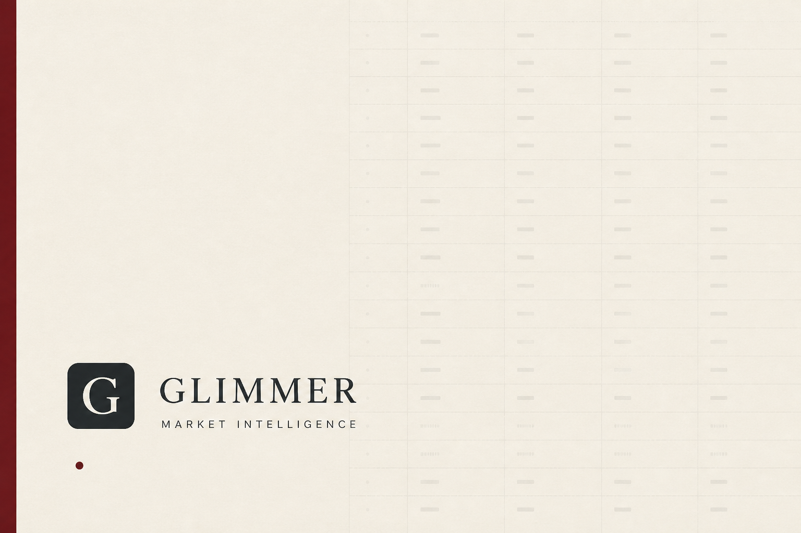

正在读取收盘数据…每日收盘后自动更新
DAILY MARKET BRIEF
市场总览 / Market Overview
核心指数、板块强弱与全市场个股收盘快照SECTOR PULSE
板块脉搏

DAILY HOT SIGNALS
每日资讯
聚合高热度市场快讯，支持按日期与来源回看历史资讯
A-SHARE UNIVERSE
个股信息
全市场快照、关键指标排序与历史收盘记录| # | 股票 | 收盘价 | 涨幅 | 换手率 | 量比 | 市盈率 | 总市值 | 成交额 |
|---|
1 / 1
MULTI-STRATEGY SELECTION
选股建议
以多种市场战法交叉观察，避免单一指标偏差观察名单，不是买入指令。 规则模型基于当日收盘数据生成，未纳入隔夜公告、次日跳空等变量。